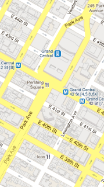

The Crux of the Matter
2011-07-28
The basic story is rather predictable:
A group of atheists has filed a lawsuit to stop the display of the World Trade Center cross at a memorial of the 9/11 terror attacks.
The "government enshrinement of the cross was an impermissible mingling of church and state," the American Atheists say in a press statement.
But the details are uniquely hilarious:
"The WTC cross has become a Christian icon," said Dave Silverman, president of the atheist group. "It has been blessed by so-called holy men and presented as a reminder that their god, who couldn't be bothered to stop the Muslim terrorists or prevent 3,000 people from being killed in his name, cared only enough to bestow upon us some rubble that resembles a cross. It's a truly ridiculous assertion."
I'd suggest that the "truly ridiculous assertion" here is Mr. Silverman's understanding of Christian iconography, and the core tenets of the Christian faith. If Mr. Silverman believes that there is no God, and that this non-existent God couldn't be bothered to yada, yada, yada...that's his prerogative. If, on the other hand, he believes (as the quote indicates) that the WTC cross is cherished by believers because it reminds them of their God's purported impotence, then I think he's mis-apprehended a detail or two.
 |
| Grand Central Terminal is Park Ave.'s Papal Hat, Mr. Silverman! |
{kind=link}
But regardless of the meaning that believers have imputed onto this cruciform hunk of steel, and regardless of the absence of any meaning derived from it by atheists, isn't it fair to say that - strictly on a materialistic basis - the object is noteworthy and also worthy of preservation? It's a cultural and historical icon, if nothing else.
According to wikipedia, the two controversially crossed steel beams were prefabricated load-bearing members of the original WTC structure. I'd be curious to know whether Mr. Silverman or his organization were present during the construction process, standing athwart the cranes yelling STOP!, or if they're only concerned with the high-profile opportunities for taking offense.
Has Mr. Silverman seen a map of New York City, in which the controversial debris was unearthed? The entire island of Manhattan is littered with orthogonal intersections of streets and avenues. When viewed from certain vantage points, it's almost impossible not to see the striking resemblance between these junctions and ol' Calvary's Tree. I understand that Catholics even cross these intersections sometimes. What's next for the American Atheists? Tearing out all the numbered Avenues and replacing them with more of those slanty Broadways and Bowerys?
Labels: Faith and Doubt, News, Rants